Your first game, in a minute.
- Open Pickled on your Watch. Pick a Play to score. Leave Timer off unless you want a time limit.
- Choose whether to record stats and an Apple Health workout using the two small icons at the bottom. A green check means on.
- Tap Start Game. Leave You and the guest players, or tap names to choose your group.
- Swap teammates into position, then swipe toward the team serving first.
- After each rally, swipe toward the winning team. If stats are on, swipe once more for how it ended.
- At the end, choose Rematch to play again, or End Session when you are done.
New muscle memory
On the score and result screens: swipe right to Undo, swipe left to Redo. This reverses build 43 and earlier. Stat choices have their own directions, shown below.
Install both apps.
Install Apple’s TestFlight on your iPhone, accept your Pickled invitation, and install the current build. Install its paired Watch app too; check the Watch app on your iPhone if it has not appeared on your Watch.
Open Pickled on both devices. Keep the iPhone and Watch versions up to date together so players and sessions can sync. The prototype requires iOS 17 or later and watchOS 10 or later.
All screenshots in this guide are captured from the native apps in simulators with sample names and games. They are examples, not a tester’s personal history. Tap any screenshot to view it full size.
Set the court. Choose the server.
You start at the bottom right. Player 2, Player 3 and Player 4 are optional guests; you can start immediately without adding anyone to your saved list. For useful partner comparisons, choose saved players when you know who is playing.
Tap a name to open the player picker. Names are alphabetized, with initials to help you find people. Choosing someone already on the court swaps the two people—even across teams. You never need a temporary fifth player.
Use the small swap control between teammates to exchange their left/right positions. Swipe up or down toward the team that will serve first. The first server starts on that team’s right court. Tap X to cancel setup or close the picker.

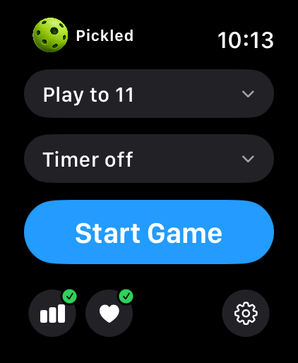

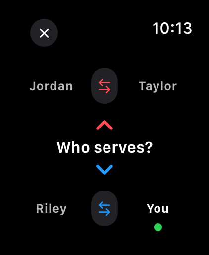

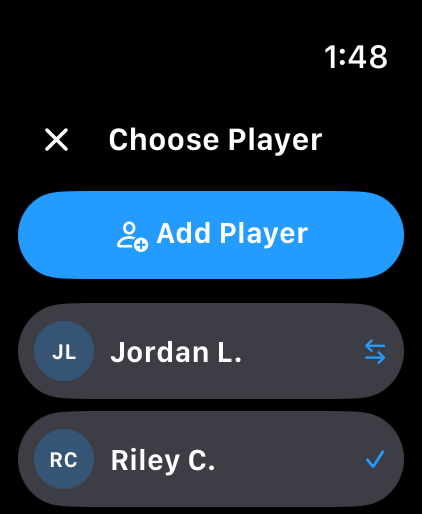
Follow the team, not the number.
The blue team is US and the red team is THEM. Swipe toward the team’s row on the court when it wins a rally. In the normal layout, that is down for US and up for THEM. The serving player has a green indicator.
Record the rally for the team shown above the score.
Record the rally for the team shown below the score.
Swipe right. Back up exactly one score or stat action.
Swipe left. Restore the action you most recently undid.
With Side-out, only the serving team scores a point. Still record every rally: losing a rally can change the server without changing the score. Doubles opens at 0–0–2. The white third number is the first or second server, and the serving team’s score is displayed first. With Rally scoring, every rally awards a point.
One action per Undo or Redo
Score a rally, record its stat, and return to scoring. One right swipe removes just the stat; the score and server stay put. Another right swipe removes the rally. Left restores the rally, then left again restores its stat. If you skipped the stat, Undo removes the rally immediately.
The revealed text tells you what will change, such as Undo stat or Redo rally. New scoring or a replacement stat clears the forward Redo history. Manual score/server/position corrections set a boundary so Undo cannot cross back through that correction.
One swipe for how it ended.
Stats are optional. After recording a rally, use the colored choices on the stat screen. These directions stay fixed:
| Swipe | Record | Use it for |
|---|---|---|
| ↑ Up | Serve / Return Error | The serve missed, or the receiving player failed to return the serve. Only the possible option is offered. |
| ↓ Down | Winner | A shot that wins the rally outright. |
| ← Left | Error | A missed shot that loses the rally. No Forced/Unforced decision. |
| → Right | Pop-up | A ball left high that lets the other team put the rally away. |

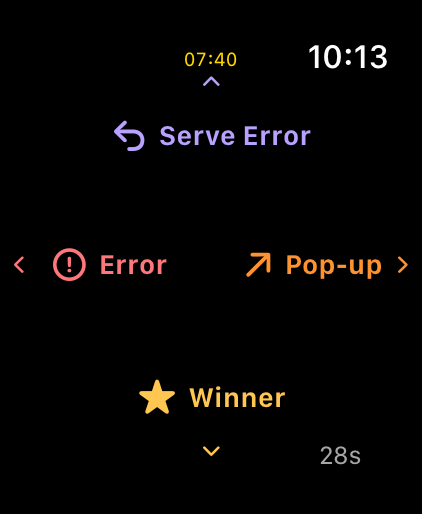
No extra Net/Out question for serves. Pickled already knows the server and receiver from the positions before the rally. A Return Error also credits the server with an unreturned serve.
Pop-up in doubles: the team stat saves first. On the follow-up screen, swipe toward or tap the player who popped it up. If you are unsure, tap the countdown or let it expire to keep only the team stat. Swipe up there to undo the Pop-up choice and return to the categories. Singles attribution is automatic.
Too busy to record it? Tap the countdown to skip. The screen also closes automatically after 30 seconds; Pop-up attribution shares that same deadline. Your rally remains recorded. Doubles Winner and Error are team stats, not guesses about which player hit the ball.
Score first. Stats second.
Swipe left on the stat screen to record Error. Swipe left on the score screen to Redo. The labels and colors tell you which screen you are on.
Fix a mistake. Play another.
Touch and hold the score or stat screen to open Actions. You can pause/resume, correct the score, change the server, fix teammate positions, end the game or end the session. You do not have to reach the target to quit.
- End Game saves the partial game and keeps the session/workout running. Manually ended games remain in history but are excluded from partner and duration comparisons.
- Rematch keeps the same teams and ending positions. Use the court screen to swap teammates and choose the next first server. Best-of-three play is a series of rematches; there is no separate series tally yet.
- End Session finishes the session and saves its workout, if enabled. Review the summary and tap Done.
Undo/Redo also works from the result screen. For a timed-out game you can correct its last stat, but Undo does not restart an expired clock. A qualifying shutout shows the pickle illustration; swipe up to see the result controls.

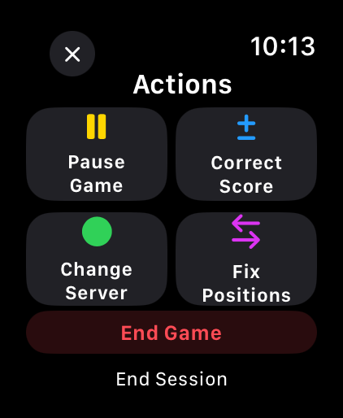

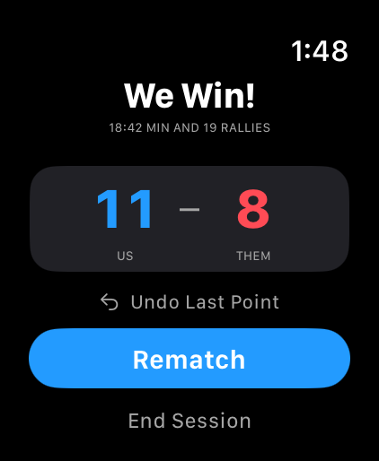

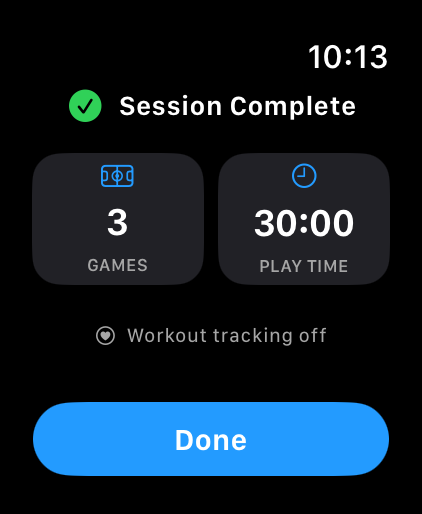
Time limits and Apple Health.
Play to a score, or add a time limit
Home has presets and Custom options: Play to from 1–99, Timer from 1–180 minutes or Off. An untimed game requires the target and a two-point lead. A timed game ends at the selected score cap or time expiry, whichever comes first; it does not go above that cap.
The countdown appears above the score in yellow and turns red in the final 30 seconds. Timer sounds warn near 30 seconds, during the last ten seconds and at expiry, subject to Watch feedback settings. It keeps counting while you enter stats or open Actions; choose Pause Game to pause it.
One workout for your whole session
Turn on the heart icon before starting, and allow the requested Apple Health permissions. Pickled records one pickleball workout across your games and rematches, with duration and available heart rate and active calories. End Session saves it. If the summary reports a saving problem, inspect the workout status before leaving.
With tracking off, scores and game length still work, but no Health workout is recorded. The Watch may return to the clock depending on its settings; reopen Pickled to resume. Workout tracking does not promise a permanently lit screen.
Find patterns on your iPhone.
Your Watch handles the game. Your iPhone brings the history together in Stats, Sessions, Players, Improve and Settings.

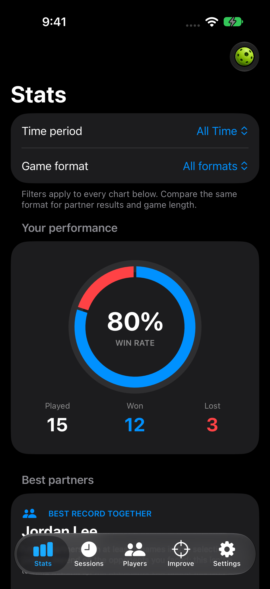

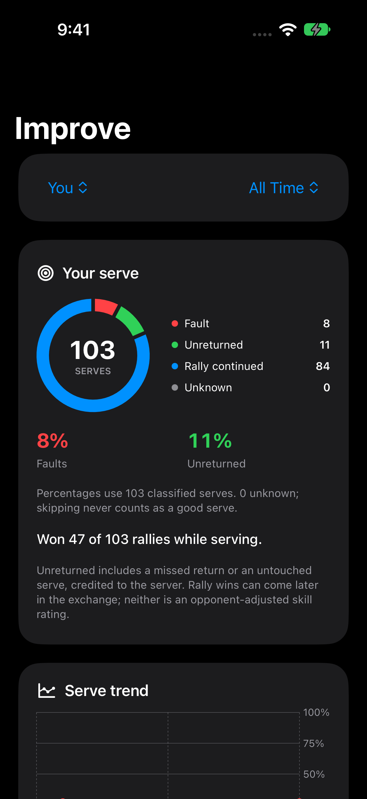
Stats: who do you play well with?
Use All Time or a year and the format filter for comparable results. Best-partner records combine wins, losses, games together and duration. A recommendation needs at least five games together and a comparable format. Use those records as context, not a guaranteed tournament prediction.
Improve: what should you practice?
Serve insights show faults, unreturned serves and rallies won while serving. Fault/unreturned percentages use classified serves; skipped or unknown outcomes are shown separately. Pop-up insights count recorded costly pop-ups, not every high ball you hit. In doubles, personal Pop-up stats require the optional player selection.
Sessions: what happened in that game?
Open a session, then a game for its score, players, automatic elapsed time and rally history. Game duration starts when play starts and ends when the game ends. It includes pauses and time between rallies, independently of the timer, stats and workout toggles.

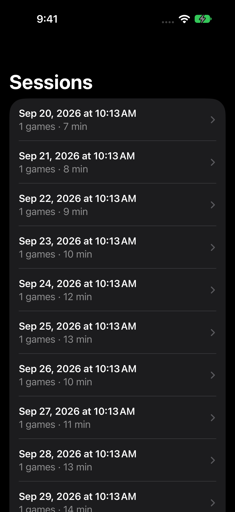

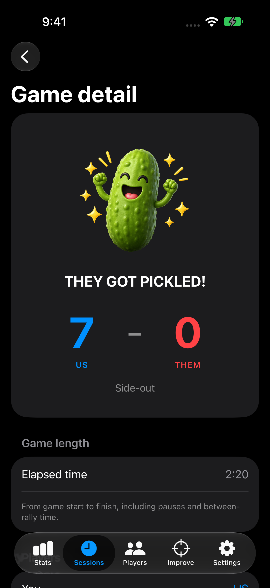
Duration is not a shot count
Pickled does not measure shots per rally. A longer game can mean more play, more waiting, or both. Partner/group duration comparisons describe past game length; they do not establish skill or intensity.
Save players once. Find them on Watch.
In Players, tap Add Player and enter the person’s name. Open their profile for With / Against views, records and charts. Use the group comparison in Stats to review games involving a selected group.
You do not need to create yourself: new games already include You. If you replace You with your saved name during setup, Pickled follows that identity through the game, including team swaps.
To rename or delete a player, open their profile and choose Edit. Deletion removes them from the saved-player lists after sync, while keeping their past games and statistics intact. You can also swipe a player row to delete.
Open both apps after adding a player so the Watch can receive the update. A player already in the current court can be chosen to swap two people directly.

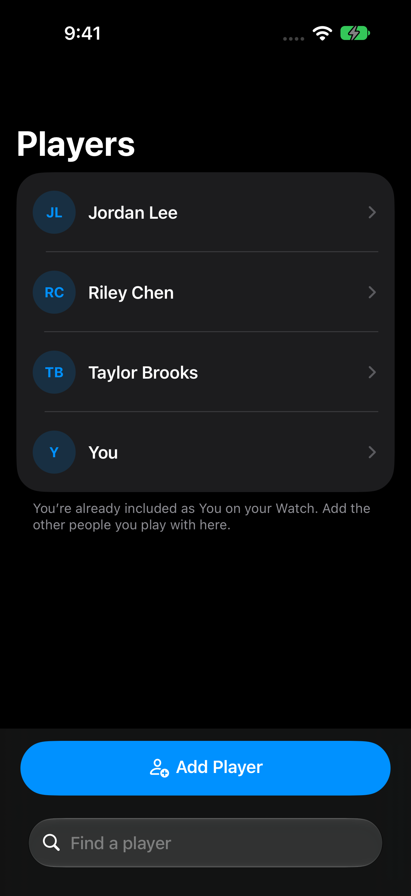

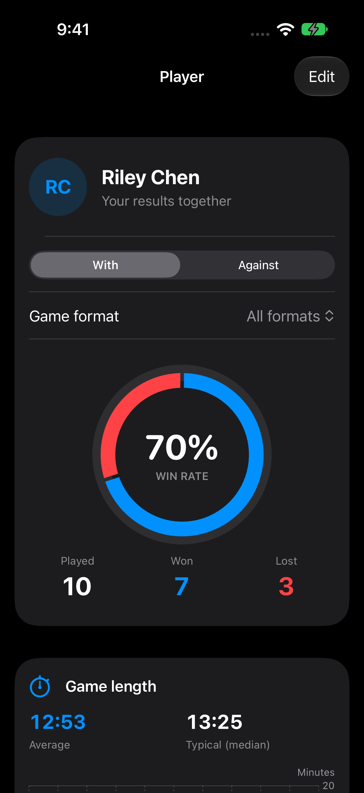
Settings, sync and your data.
- How to Play: reopen this guide from the Support Pickled section.
- Appearance: follow System or choose Light/Dark on iPhone. The Watch stays dark.
- Match defaults: configure your usual options and tap Send defaults to Watch. They apply to the next setup, not a game already in progress.
- Sync: in Devices & data, request a sync with both apps open and devices nearby. Transfers can wait while a device is offline.
- Export: Settings → Export Data → Export CSV Files. Export sessions, games, rallies and players. It includes all data saved on that phone, not just the current filter. Sync first for your latest Watch games.
- Clear test data: Settings → Clear All Data, then confirm. It clears Pickled data on both paired devices, including games and players. An offline device clears when it reconnects. Already exported files and workouts saved in Apple Health remain.
Game data is stored locally and transferred between the paired iPhone and Watch. iCloud sync is not enabled in this beta. Keep an export if you need an independent copy of your history.
Something feel off? Tell Chuck.
TestFlight feedback
On iPhone, open TestFlight → Pickled → Send Beta Feedback. Add a screenshot if useful, describe what happened, and submit. For a Watch problem, describe the Watch screen and attach a Watch screenshot or photo from your iPhone.
This reaches the developer in App Store Connect. It is beta feedback, not a public App Store review. See Apple’s TestFlight instructions.
Email from Pickled
Open Pickled → Settings → Send Feedback to write to chuck@rareview.com. The draft includes the app version in its subject. You choose what to send; game and Health data are not attached automatically. If Mail is not available, you can copy the address or choose another email app.

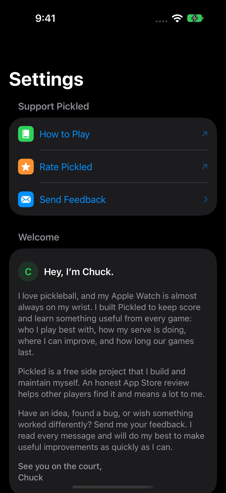
The most helpful bug report
- What you were doing: “Second rematch, doubles, side-out, timer off, stats on.”
- What you expected and what happened: include swipe direction and which screen you were on.
- Device and build: Watch model, iPhone model and Pickled version/build from Settings or TestFlight.
- A screenshot or short recording: if practical. Tell us whether it happens every time and how you recovered.
Suggestions are welcome too—especially where the app slows you down between rallies. Never interrupt play just to file a report; send it afterward.
When something isn’t obvious.
I won the rally. Why didn’t the score go up?
With side-out scoring, only the serving team scores. A receiving-team win changes the serve. Keep recording every rally so Pickled tracks the server correctly.
I chose the wrong stat. Do I have to undo the point?
No. Back on scoring, swipe right once to remove the stat only. Another right swipe removes the rally. Swipe left to restore the step you just undid. You can also leave that rally unclassified and keep playing.
How do I stop before reaching the target?
Hold the scoring or stat screen for Actions. Choose End Game to save a partial game and continue the session, or End Session to finish everything. During court/player setup, use X or hold to cancel.
Why isn’t my new player on the Watch?
Update both apps, open them on nearby paired devices, and request sync from iPhone Settings. Transfers can be delayed while devices are disconnected. If it persists, send the two app versions and a screenshot.
Why are some stats missing?
Stats must be on and a category must be recorded. Skipping preserves the rally but leaves its outcome unclassified. Doubles Winner/Error are team-only; personal Pop-up stats need a selected player. Older games may have less detail or an unknown personal identity.
Can I see the old detailed categories?
Older Forced, Unforced, Bodybag and Other events stay in historical data and exports. New entries and current charts use Winner, Error, Pop-up, Serve Error and Return Error.
Should I clear all data when installing an update?
No. Updates preserve your history. Clear All Data is only for when you intentionally want to reset testing records on both devices. It does not erase workouts already saved to Apple Health.